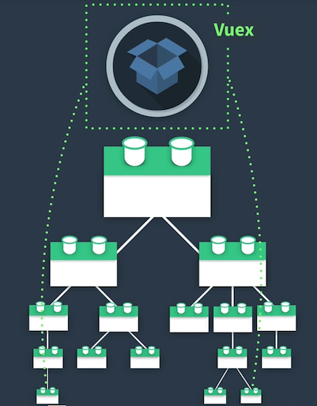

Cours Web
Created by Corentin LATAPPY
Inspired by Cyril BESLAY
Qui suis-je ?
- Corentin Latappy
- Post-Doctorant au LaBRI
- Dev full-stack en JS & TS
- corentin.latappy@labri.fr
Plan du cours
- Cours 1 : Introduction et bases de JavaScript
- Cours 2 : Développement côté serveur avec Express
- Cours 3 : Développement côté client avec VueJS
- Cours 4 : Composants et Routeur
- Cours 5 : Socket.io
Plan des TPs
- TP 1 : Site Web Météo dynamique
- TP 2 : PHE - Partie Serveur
- TP 3 : PHE - Partie Client
- TP 4 : PHE - Composants et Routes
- TP 5 : PHE - Communication et Refactoring
Accès aux Supports
https://github.com/CorentinLat/Dev-Web-Enseirb-2APourquoi JavaScript ?
Langage très utilisé et en forte progression
 https://survey.stackoverflow.co/2023
https://survey.stackoverflow.co/2023
Langage Full Stack

- Frontend
- Serveur
- Mobile
- Jeu
Internet sans Javascript


Écosystème
Le language JavaScript
// Set variables
let myBankBalance = 0;
let output = "";
// Do the 'for' loop
for (myBankBalance = 0; myBankBalance <= 3; myBankBalance++) {
if (myBankBalance === 1) {
continue;
}
output += "My bank balance is now $" + myBankBalance + "
";
}
// Output results to the above HTML element
document.getElementById("msg").innerHTML = output;
EcmaScript
- Standard international qui définit JavaScript
- Apporte de nouvelles fonctionnalités
- Non compatible avec tous les navigateurs
- ES5, ES6, ES2017, ...
Frameworks
- Bibliothèques qui permettent de faciliter le développement, donner un cadre et des outils
- Beaucoup de frameworks disponibles
- Environnement évoluant très vite
- 3 acteurs majeurs : Angular, React, Vue.js
Backend
Aujourd'hui, JavaScript n'est pas seulement utilisé dans le web mais aussi pour des applications lourdes (Discord, WhatsApp Desktop, ...) et pour des serveurs.
Même syntaxe, mais librairies et concepts différents.
Outils
- Navigateur (Chrome, Firefox, ...)
- Editeur (WebStorm, VSCode, Atom, ...)
- Terminal
- Node Package Manager - NPM
Language JavaScript
Où développer ?
- Console Chrome
- Page web HTML
- Serveur NodeJS
Les normes d'écriture

L'idée de base est que "les développeurs d'un même projet codent de la même manière".
Pour ce cours et les TPs, ça n'a pas d'importance. Restez constants.
Language interprété
- Pas de compilation.
- Chaque marque a son moteur (Microsoft, Google, Apple, Mozilla).
- Language visible dans le navigateur (exemple).
- Scripts exécutés chez le client.
Hello World !
alert('Hello World !');
Variables
- let
- const
- (var)
- camelCase
var messageToSend = 'Hello World !';
let author = 'Cyril';
const country = 'FR';
author = 'Corentin';
alert(messageToSend);
Typage dynamique
- Une variable peut contenir tout type de donnée.
- Le type de donnée dans une variable peut changer au cours du temps.
let studentNumber = 150;
console.log(studentNumber);
studentNumber = '150';
console.log(studentNumber);
- undefined : Variable non définie
- null : Valeur inconnue
let studentNumber;
console.log(studentNumber); // undefined
studentNumber = null;
console.log(studentNumber); // null
type of pour connaître le type d'une variable
typeof undefined // "undefined"
typeof 0 // "number"
typeof true // "boolean"
typeof "foo" // "string"
typeof {'foo' : 'fact'} // "object"
typeof null // "object"
typeof alert // "function
Comparaisons
Attention au type
let studentNumber = 150;
let studentNumberExpected = '150';
studentNumber == studentNumberExpected // true
studentNumber === studentNumberExpected // false
Conditions
if
const year = prompt('In which year was ECMAScript-2015 specification published?', '');
if (year == 2015) {
alert('You guessed it right!');
} else {
alert('How can you be so wrong?');
}
switch
const a = 2 + 2;
switch (a) {
case 3:
alert('Too small');
break;
case 4:
alert('Exactly!');
break;
case 5:
alert('Too large');
break;
default:
alert("I don't know such values");
}
Boucles
- for
- while (do while)
- break
- continue
for (let i = 0; i < fruits.length; i++) {
if (fruits[i] === 'Banana') {
continue;
}
console.log(fruits[i]);
}
while (i < 10) {
console.log('The number is ' + i);
i++;
if (i > 7) {
break;
}
}
Fonctions
function checkAge(age, legalAge = 18) {
if (age >= legalAge) {
return true;
} else {
return 'Got a permission from the parents ?';
}
}
let response = checkAge(19);
console.log(response); // true
response = checkAge(19, 21);
console.log(response); // false
Deux syntaxes
// Function classique
function checkAge(age, legalAge = 18) {
return age >= legalAge;
}
// Function arrow
const checkAge = (age, legalAge = 18) => (age >= legalAge);
const cities = data.filter(city => (city.population > 500000));
Tableaux
- Facile à manipuler
- Nombreuses fonctionnalités portées par l'objet (length, push, pop, shift)
- Parcours de 0 à length - 1
let fruits = ['Apple', 'Orange', 'Pear'];
for (let i = 0; i < fruits.length; i++) {
console.log(fruits[i]);
}
fruits.push('Citron');
console.log(fruits); // ['Apple', 'Orange', 'Pear', 'Citron']
console.log(fruits.length); // 4
console.log(fruits.shift()); // 'Apple'
console.log(fruits); // ['Orange', 'Pear', 'Citron']
Manipulation de Tableaux
forEach
const fruits = ['Apple', 'Orange', 'Pear'];
fruits.forEach(fruit => console.log(fruit)); // Apple, Orange, Pear
Manipulation de Tableaux
map
const numbers = [0, 1, 2, 3];
const squares = numbers.map(number => number * number);
console.log(squares); // [0, 1, 4, 9]
Manipulation de Tableaux
filter
const numbers = [0, 1, 2, 3, 4, 5];
const evens = numbers.filter(number => number % 2 === 0);
console.log(evens); // [0, 2, 4]
Objets
Un objet est un type complexe capable de stocker plusieurs informations.
L'objet a un ensemble de clés/valeurs appelé propriétés.
L'accès à une propriété se fait via objet.property ou objet['property'].
const student = { name: 'Clark', age: 23 };
const admin = student; // copy the reference
console.log(student.name); // 'Clark'
admin.name = 'Superman';
console.log(student.name); // 'Superman'
This
const user = {
name: 'John',
age: 30,
sayHello() {
return 'Je suis ' + this.name + ' et j\'ai ' + this.age + ' ans.';
}
};
Échange Client-Serveur
HyperText Transfert Protocol
HTTP est un protocole de communication client-serveur développé pour le web.
GET, POST, PUT, DELETE sont des verbes HTTP
Comment appeler un serveur ?
2 méthodes :
- XMLHttpRequest
- fetch (ES6)
XMLHttpRequest
const req = new XMLHttpRequest();
req.open('GET', url);
req.send();
Fetch
fetch(url)
.then(() => {
// Do something
});
JSON
Format d'échange de données structurées
{
"book": {
"title": "Moby Dick",
"author": "Herman Melville",
"reviews": [
{"reviewer": "Mark234", "rating_stars": "4.5"},
{"reviewer": "Frank12", "rating_stars": "3.5"},
{"reviewer": "NotPatrick", "rating_stars": "4"}
]
}
}
Promise
Une promesse représente une valeur qui peut être disponible maintenant, plus tard ou jamais.
const promise = new Promise((resolve, reject) => {
setTimeout(function() {
resolve();
}, 300);
});
promise.then(() => console.log('arrivé 2ème :('));
console.log('arrivé 1er :)');
Promise
Beaucoup de fonctions travaillent en asynchrone, donc avec un système de promesse.
Exemples de fonctions I/O :
- fetch (HTTP)
- fs (filesystem)
- database querying
Chainer les promesses
fetch('./file.json')
.then(response => response.json())
.then(data => console.log(data))
Async / Await
Introduit depuis ES8
Même résultat que les promesses mais plus lisible
Async / Await
const response = await fetch('./file.json');
const data = await response.json();
console.log(data);
Ressources externes
ECMAScript
EcmaScript 5, 6, 7, 8...
EcmaScript définit les standards et nouveautés de développement
Problème : les navigateurs et moteurs JavaScript mettent du temps à s'adapter
Une notion de compatibilité entre en jeu
ECMAScript Compatibilité
Tableau de compatibilité des différents navigateurs et moteurs
Tableau de CompatibilitéES5
- Fonctions Array forEach, map, filter
- JSON.parse() et JSON.stringify()
- getters et setters sur les objets
ES2015 (ES6)
- Paramètre par defaut
- String literals
- Arrow functions
- Promise
- Const and Let
- Classes and super
ES2023 (ES14)
Pas encore stable, pas encore compatible
Ne partez pas trop tôt

Babel & Webpack
Comment faire pour utiliser ES6/ES7 en s'assurant d'être compatible avec le plus grand nombre ?
La transpilation permet de tranformer du code "nouveau" en code "ancien".
Dans notre cas, ECMAScript vers JavaScript.
Il est donc possible d'écrire du code avec des fonctionnalités modernes tout en restant compatible avec tous les navigateurs.
Babel JS
Un outil de transpilation majoritairement utilisé
WebPack
Outil qui permet :
- d'executer des transformations sur des fichiers
- d'agréger des fichiers
- une grande configuration/personnalisation
Node JS et ExpressJS
NodeJS
Environnement d'éxécution de JavaScript côté serveur
Basé sur le moteur V8
Version Long Time Supported : 20
Node Package Manager
Gestionnaire de paquets officiel de NodeJS
Permet l'installation et la gestion de dépendances (librairies) pour un projet
Node Package Manager
La configuration se fait via un fichier package.json
{
"name": "phe-backend",
"version": "1.0.0",
...
"dependencies": {
"express": "^4.17.1",
"sqlite3": "^5.1.6"
},
"devDependencies": {
"nodemon": "^3.0.1"
}
}
Node Package Manager
Deux commande principales :
npm i (npm install)npm i paquet
ExpressJS
Bibliothèque légère pour développer des applications NodeJS
Gestion des routes pour une API HTTP
ExpressJS
import express from 'express';
const app = express();
app.get('/', function(req, res) {
res.send('Bienvenue');
});
app.listen(8080);
ExpressJS
app.get('/hello/:name', function(req, res) {
const name = req.params.name;
res.send('Bienvenue ' + name);
});
Notion de Module
Pour mieux structurer notre code, nous avons besoin de le séparer en plusieurs fichiers.
Nous pouvons importer des modules internes ET externes
import http from 'http'; // import externe (coeur node)
import express from 'express'; // import librairie externe (node_modules)
import utils from './utils'; // import interne (dossier utils)
export function dateFrancais() {
return new Date().toLocaleDateString('fr-FR');
}
import dateModule from './dateModule';
console.log(dateModule.dateFrancais());
Frameworks JavaScript
Pourquoi utiliser un Framework ?
- Cadre de développement
- Développement plus rapide
- Structuration du code et réutilisation
- Faciliter la manipulation du DOM
N'utilisez pas un framework JavaScript pour développer une simple page.
Single Page App
Principe : éviter le chargement d'une nouvelle page à chaque action afin de fluidifier l'expérience utilisateur
Optimisation nombre d'appels HTTP
Single Page App
Poids des pages augmente mais :
- Possibilité de faire du rendu progressif
- Les débits Internet augmentent
Quel framework ?

Quel framework ?
| VueJS | Angular | ReactJS | EmberJS | |
|---|---|---|---|---|
| Courbe d'apprentissage | üòÉ | üòê | üòê | üòê |
| Efficacit√© | üòÉ | üòê | üòê | üòê |
| Maintenance | üòê | üòü | üòü | üòÉ |
| Ecosyst√®me | üòê | üòÉ | üòê | üòê |
| Popularit√© | üòê | üòê | üòÉ | üòü |
| Performance | üòÉ | üòÉ | üòÉ | üòü |
| Niveau requis | üòÉ | üòü | üòê | üòê |
VueJS
Vue.js
VueJS
- Développer rapidement des interfaces utilisateurs
- Prise en main progressive : coeur simple mais bibliothèques et écosystème complets
- Principe de découpage en composants réutilisables et autonomes
- Très bonne documentation
VueJS
Créé en 2014 par Evan You
Open source : https://github.com/vuejs/vue
Utilisé par Netflix, Adobe, Alibaba et Gitlab.
Comparaison avec React :
- beaucoup de similitudes (dom, components)
- template JSX vs Mustache
- JSX + ES6 vs apprentissage rapide
- React Native (applications mobiles)
Comparaison avec Angular (Angular 2 et +) :
- VueJS inspiré d'Angular
- TypeScript
- complexité
- stricte vs flexibilité
- poids
Première page VueJS
Utilisation de VueJS en composant monofichier
3 parties dans chaque composant :
- template (HTML)
- script (logique)
- style (CSS)
VueJS en composant monofichier
< HTML />
Partie Template
{{ etudiant.nom }}
Partie Script
Partie Style
S'applique uniquement sur le composant / la page
Binding 2-ways
Lien entre template (affichage) et script (données).
Si l'utilisateur modifie l'affichage, la donnée est modifiée.
Si la donnée est modifiée, l'affichage se met à jour.
Binding 2-ways
Utilisation de Mustache
{{ message }}
Utilisation de v-model
Directives
Attributs spécifiques à VueJS
v-if permet d'afficher ou non un bloc selon l'état d'une variable
Hello !
Please log in
Directives
v-for permet d'afficher une liste d'élements
-
{{movie.name}} - {{movie.date}}
Méthodes
Fonctions contenant la logique, permettant de manipuler les données
Evènements
Actions ou interactions utilisateurs
Le plus souvent, le but va être de connecter des évènements à des méthodes.
Utilisation du mot-clé @
Evènements
Vous avez reçu {{applaudissements}} applaudissements.
Propriétés calculées
Pour les traitements de donnée lourds avant affichage
L'idée est d'éviter de mettre ces traitements dans le template
Utilisation du mot-clé computed
Propriétés calculées
Cycle de vie
Chaque composant/page a un cycle de vie (création, monté, détruit).
Il est possible de "s'accrocher" à des moments du cycle pour effectuer des actions.
Web Components

Web Custom Components
Basé sur Custom Elements, Shadow DOM, Template, des normes HTML
VueJS Components
Similaire à Web Custom Components
Permet de découper l'application en plusieurs pages et chaque page en plusieurs éléments
VueJS Components
Avec notre approche composant monofichier, chaque fichier .vue est un composant.
Le fichier App.vue représente la page parente.
VueJS Components
Exemple composant CharacterItem.vue :
{{ character.name }}
Couleur des yeux : {{ character.eyeColor }}
Data down, event up
Transférer des données à un composant fils se fait via des propriétés
{{ character.name }}
Couleur des yeux : {{ character.eyeColor }}
Data down, event up
Remonter des actions à un composant père se fait via des évènements
VueJS Components
Utilisation composant :
VueJSRouter
Router / Routage ?
Dans un site web classique, chaque page a une URL différente :
- https://amazon.fr/panier
- https://amazon.fr/paiment
- https://amazon.fr/article-27
Router / Routage ?
Dans un site SPA, tout est sur la première page. Se posent les problèmes suivants :
- SEO (moteurs de recherche)
- Historique
- Partage de liens
Router / Routage ?
La solution est le router qui va faire le lien entre l'url et les pages.
vue-router
La librairie proposée avec VueJS pour gérer les routes.
https://router.vuejs.orghttps://github.com/vuejs/router
vue-router
Trois étapes :
- Définition des routes
- Utilisation des routes dans les templates
- Utilisation des routes dans la logique
vue-router
Définition des routes : attacher des URLs à des composants
routes: [
{ path: '/', name: 'Home', component: Home },
{ path: '/race', name: 'Race', component: Race },
{ path: '/login', name: 'Login', component: Login }
]
vue-router
Utilisation des routes dans les templates
Se connecter
Course
vue-router
Utilisation des routes dans la logique
// chaine de caractère représentant un chemin
router.push('/login');
// route nommée
router.push({ name: 'Race' });
vue-router
Routes dynamiques
routes: [
{ path: '/utilisateur/:id', component: User, name: 'user' }
]
router.push({ name: 'user', params: { id: 123 } })
vue-router
- Chaque route est liée à un composant (une page)
- Chaque page peut contenir plusieurs composants
- Lorsque l'utilisateur clique sur un lien de navigation, vue-router modifie la page pour afficher le nouveau composant
VueX
VueX
VueX est un gestionnaire d'état
https://vuex.vuejs.org/
VueX
Sans gestionnaire d'état, toute donnée modifiée dans un composant est difficile à partager au sein de toute l'application.
VueX
VueX
Avec VueX, il est possible de gérer un "store" (modèle de stockage) contenant des données/états.
VueX
VueX
Exemples de besoins :
- stocker l'état connecté/déconnecté d'un utilisateur
- stocker le panier d'un client
- stocker préférences utilisateur
- alléger les appels backend
VueX
VueX - State
L'état "state" est la liste des données à sauvegarder
Equivalent à data dans un composant
state: {
count: 0
},
VueX - Mutations
Les mutations modifient les états
mutations: {
INCREMENT: function(state) {
state.count++;
},
DECREMENT: function(state) {
state.count--;
}
},
VueX - Actions
Les actions gèrent la logique et commitent des changements d'état
Equivalent aux méthodes dans un composant
Des appels backend peuvent être effectués ici
actions: {
incrementAction: function(context) {
console.log('Action d\'incrémentation');
context.commit("INCREMENT");
},
decrementAction: function(context) {
console.log('Action de décrémentation');
context.commit("DECREMENT");
}
},
VueX - Actions
Les actions sont appelées depuis un composant via dispatch
store.dispatch("incrementAction");
VueX - Getters
Les getters permettent d'accéder en lecture aux états du store
getters: {
count: function(state) {
return state.count;
}
}
store.getters.count;